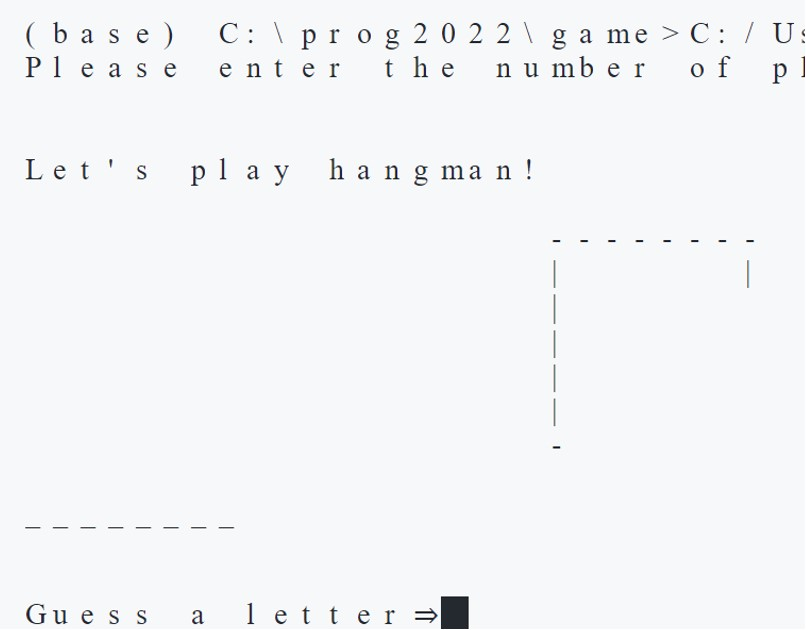
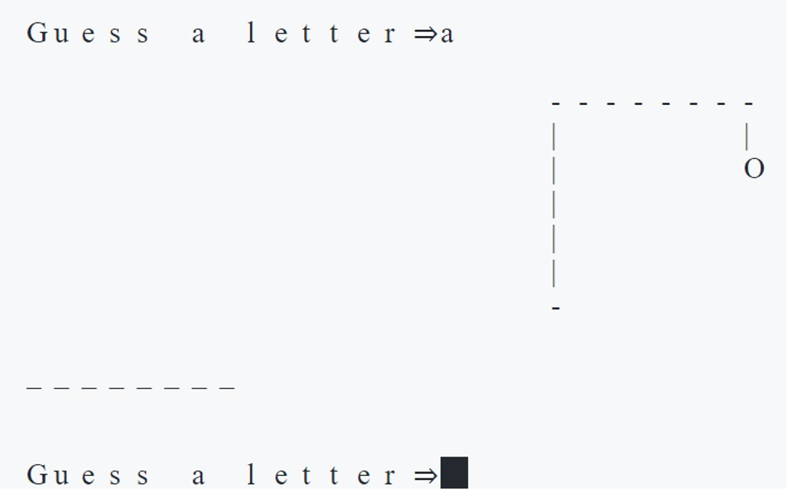
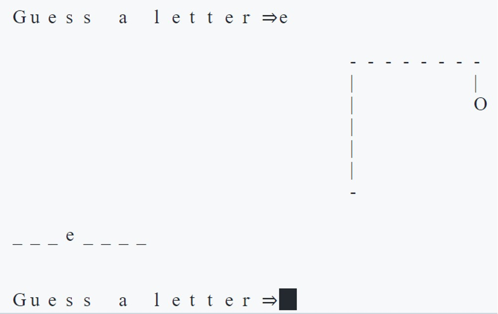
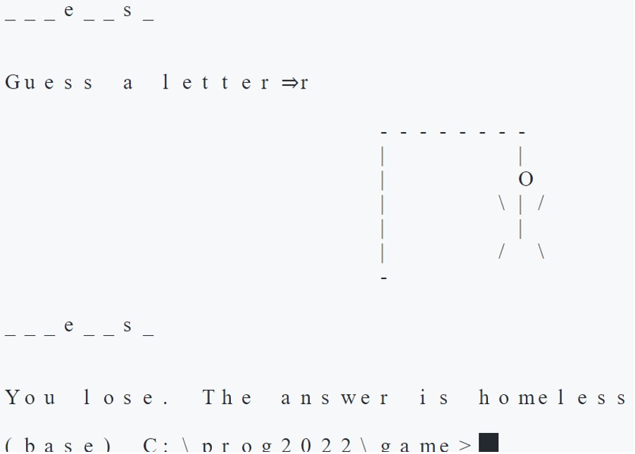

Hangmanというアメリカの子供たちの間で流行った単語当てゲームをPC上で実装しました。
hangmanは「絞首刑を執行する人」を意味します。このゲームでは単語を当てられないと人がつるされて殺されてしまいます。以下の要領でゲームを行います。
プレーヤー数を選ぶとゲームスタート。左の破線はアルファベット数、右の図形はhangmanがつるされる絞首台である。
aを入力。答えの単語には含まれないようなのでhangmanの頭が出てきた。
eを入力。eは単語に含まれるようなので左の破線が変化し、hangmanは現状維持。
複数回繰り返した。上限回数間違えてhangmanが完成した（つるされた）ので回答者はゲームオーバー
この作品はpythonを勉強して始めて制作したものでした。それまでに学んだ基本的な文法や関数などの概念をアウトプットすることが出来ました。
今回はターミナル上でのみ動くゲームを作成しましたが、次回は誰でもアクセスできるアプリ形式で作成したいです。また、今回は無作為にアルファベットを当てる方式でしたが、適宜ヒントを加える機能が追加出来たら、より面白いゲームになると思いました。